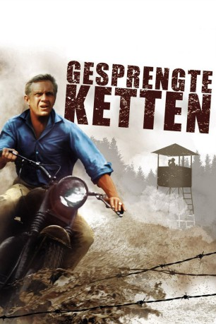

Alternativ: The Great Escape
Auszeichnungen: für 1 Oscars nominiert
 
 IMDB-Wertung: 8.2 / 10
IMDB-Wertung: 8.2 / 10  IMDB-TOP-Platzierung: 130
IMDB-TOP-Platzierung: 130  Metascore:
Metascore: 
Mitten im zweiten Weltkrieg planen einige hundert Kriegsgefangene aus den USA und England die Flucht aus einem deutschen Kriegsgefangenenlager. Ihr Vorhaben besteht darin, alle auf einmal zu fliehen, wozu sie mehrere Tunnel aus dem Lager graben. Nach vielen Mühen und Schwierigkeiten gelingt einer großen Gruppe die Flucht, die dann versucht, quer durch Europa zu entkommen.
Jahr: 1963
Dauer: 172 Minuten
FSK: 12
Land: USA Studio: United ArtistsTonspuren:
Untertitel:
Auflösung: 1080p (1920×824) Größe: 12083 MB
Genre: Abenteuer, Drama, Geschichte, Thriller, Krieg
Regisseur: John Sturges
Drehbuch: Paul Brickhill, James Clavell, W.R. Burnett
Soundtrack: Elmer Bernstein
Darsteller:
 Steve McQueen als Hilts 'The Cooler King'
Steve McQueen als Hilts 'The Cooler King' James Garner als Hendley 'The Scrounger'
James Garner als Hendley 'The Scrounger' Richard Attenborough als Bartlett 'Big X'
Richard Attenborough als Bartlett 'Big X' Charles Bronson als Danny 'Tunnel King'
Charles Bronson als Danny 'Tunnel King' Donald Pleasence als Blythe 'The Forger'
Donald Pleasence als Blythe 'The Forger' James Coburn als Sedgwick 'Manufacturer'
James Coburn als Sedgwick 'Manufacturer' David McCallum als Ashley-Pitt 'Dispersal'
David McCallum als Ashley-Pitt 'Dispersal' Gordon Jackson als MacDonald 'Intelligence'
Gordon Jackson als MacDonald 'Intelligence' Nigel Stock als Cavendish 'The Surveyor'
Nigel Stock als Cavendish 'The Surveyor' Karl-Otto Alberty als S.S. Officer Steinach
Karl-Otto Alberty als S.S. Officer SteinachDatei: X:\1963\Gesprengte Ketten (1963, FSK12, 1920x824).mkv seit 13.02.2015
Festplatte: HD 1900-1970
 Es gibt insgesamt 23 Filme in der Gruppe '1963'
Es gibt insgesamt 23 Filme in der Gruppe '1963'